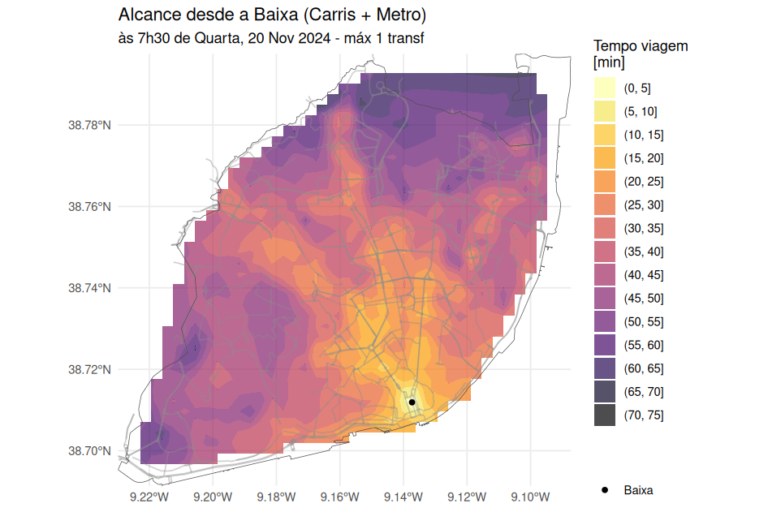
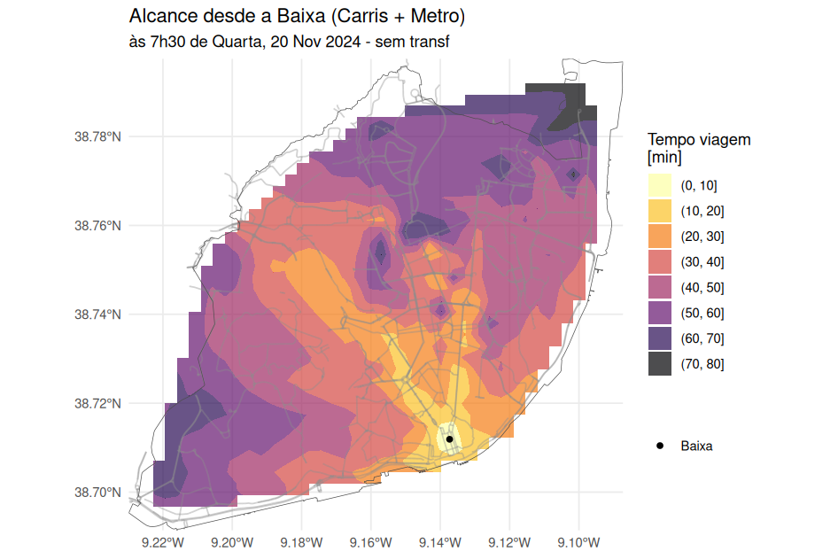
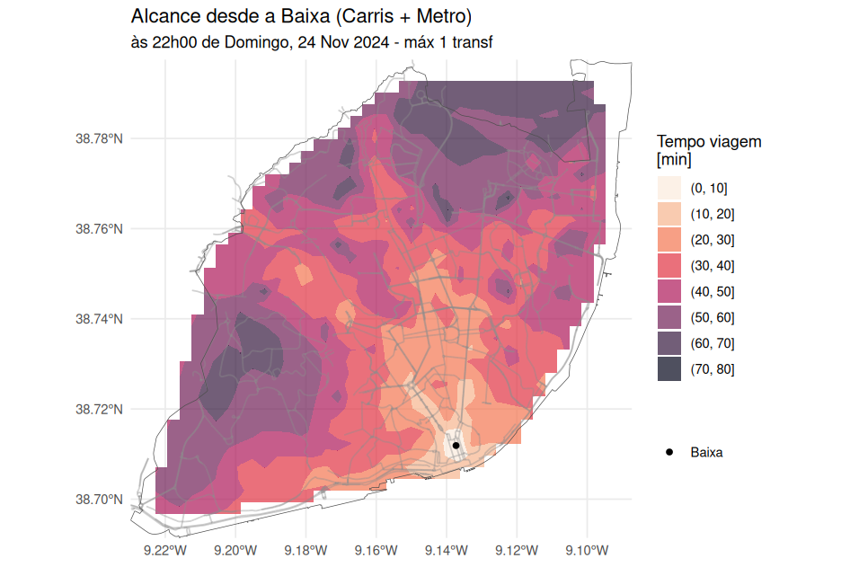
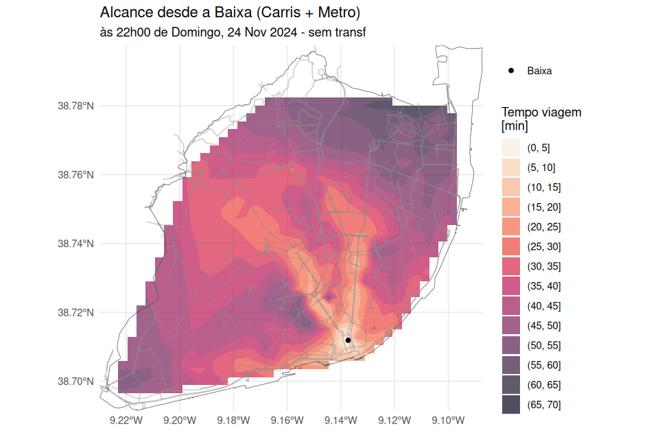
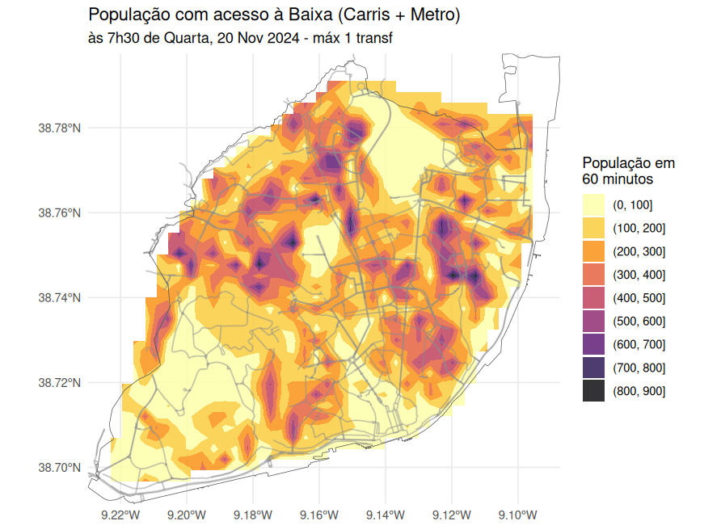

8 Acessibilidade com r5r
Com base nos dados GTFS do Metro e Carris, vamos estimar isócronas e acessibilidade à população residente em Lisboa, a partir da Baixa.
Para tal, iremos usar o pacote r5r (Pereira et al. 2021).
O r5r cria um modelo através da combinação dos seguintes ficheiros na mesma pasta:
- Rede viária (OpenStreetMap1 em formato
.osm.pbf) - GTFS2 dos vários operadores (1 único
.zipou vários) - Modelo digital do terreno3 (
.tiff), para impedâncias nos modos a pé e bicicleta
Ver o código code/r5r.R
8.1 Isócronas
8.1.1 Em Hora de Ponta
Numa quarta-feira às 7h30, quanto tempo demoro a chegar ao território de Lisboa, usando Metro, Autocarro, e ligações a pé?
Com 1 transferência

Sem transferências

8.1.2 Num Domingo à noite
E num Domingo às 22h00, quanto tempo demoro a chegar ao território de Lisboa, usando Metro, Autocarro, e ligações a pé?
Com 1 transferência

Sem transferências

8.2 Acessibilidade à população
Com base nos dados dos Censos 2021 (INE 2022), podemos também “contar” quantas pessoas são alcançáveis no território.
Com 1 transferência
| Hora de Ponta | Domingo à noite |
|---|---|
| 35.9% em 30 min | 20.9% em 30 min |
| 83.6% em 45 min | 43.7% em 45 min |
| 97.4% em 60 min | 61.6% em 60 min |
Sem transferências
| Hora de Ponta | Domingo à noite |
|---|---|
| 22.8% em 30 min | 17.6% em 30 min |
| 68.2% em 45 min | 38.2% em 45 min |
| 89.7% em 60 min | 51.7% em 60 min |
Como seria de esperar, em hora de ponta é possível alcançar mais residentes.
Podemos também visualizar que população é acedida:

Podemos também avaliar o acesso a escolas, ou outros POIs (pontos de interesse).
Ver como exportar no capítulo anterior.↩︎
Opcional.↩︎
Opcional.↩︎